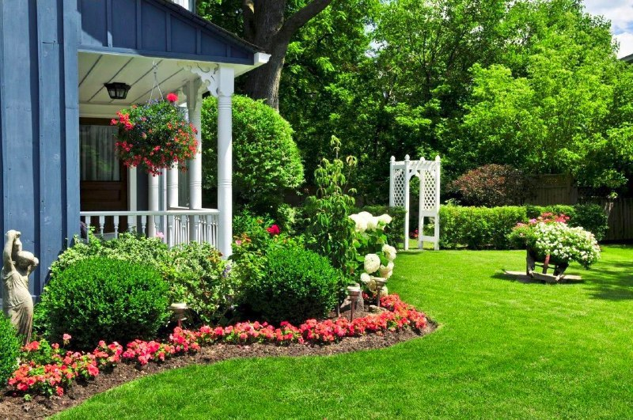

Бировнинг ҳаёти бизга осон ва жуда гўзал кўринади.

Биз тезда бой бўлиб қолишни хоҳлаймиз, ақлли бўлиб қолишни бир зумда, ҳаммани эътибори бизда бўлишини ва осон эътироф этилишимизни истаймиз.
Ҳасаддан эҳтиёт бўлиш билан биргаликда, ҳавасга хам шошилавермаслигимиз керак, ўзимиздан «ҳаваскор» ясаб, сиз ўша ҳавас қилаётган инсонингизни элементар равишда расмини топиб яқинлаштириб кўринг - ажинларини, оғриқларини ва жавобгарликни кўрасиз. Елкасини очиб кўрсангиз ҳаёт зарбаларини кўрасиз, бошидаги ғурраларни кўрасиз - сочини ораласангиз.
Бировнинг даласи бировга доим яшил кўринади.
Сиздан поғонада қуйироқлар мавжудлигини инобатга олиб,
Алҳамдулиллаҳ, борига шукур, етказганингга шукур деб қўйинг, бир бор!
П.с.:
Дилим бўлган эди битта ёрга зор,
У ўзга бир ерда ғамга гирифтор.
Мен ундан ўзумга дору изласам,
Нетай, табибимнинг ўзи ҳам бемор.
/Умар Ҳайём/
🕊 Яқинларга улашинг
❤️ Umid Hudoyberdiev 🙂